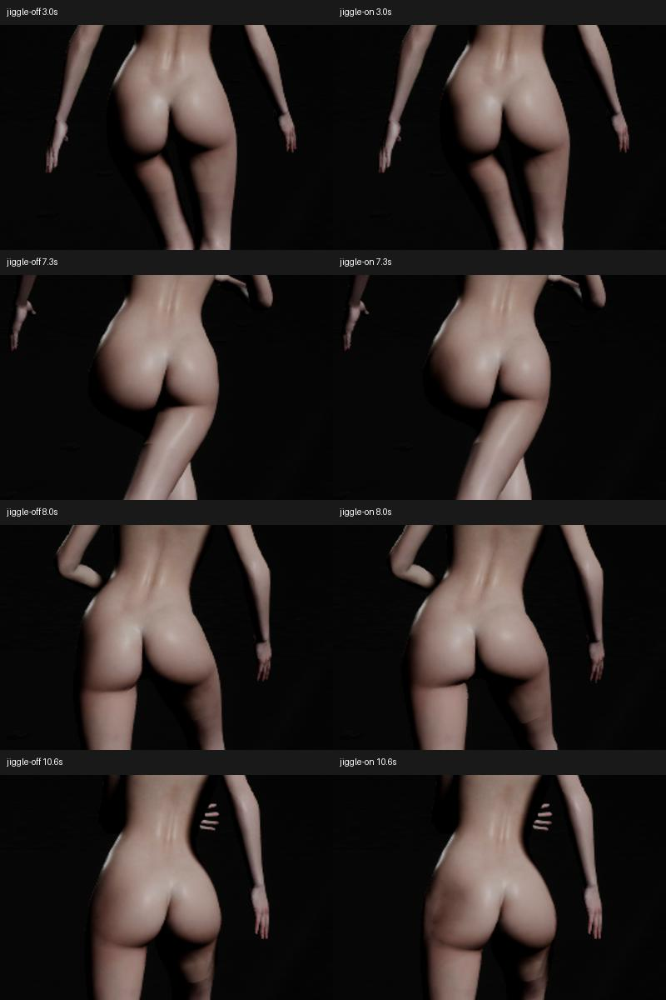

臀腿 Jiggle · 越肩移动实录
主视频：臀部＋腿部 Jiggle 开启
真实 PIE · 16 秒 · 右肩后方跟随 · 行走 1.6 m/s / 跑步 4.0 m/s
局部对照：左关闭 / 右开启
半速对照（无插帧）
查看 Jiggle 关闭的完整视频
行走、跑步与急停局部帧

观察结论
普通 BP_VamCharacter，沿地面实际前进 26.2 米，臀部和腿部 Jiggle 同时开启。使用上一版参数与角色资产，本轮没有修改 Jiggle 参数或权重。
已检查行走、跑步、急停关键帧及臀腿放大对照：未见之前的大腿横向环状接缝明显复现，也没有爆点或持续失稳。 臀部仍有较明显的整体摆动，停止后的恢复也比腿部慢，不能只凭求解稳定就认定动作已完全自然。建议重点观看 6.5–11.5 秒，判断臀部摆幅是否符合你的目标。
这次观察覆盖该越肩视角及这组动作；没有据此宣称所有角度都无接缝，也没有做逐帧 GPU 表面自交验收。
动作时间线
| 时间 | 状态 |
|---|---|
| 0–1 秒 | 静止 |
| 1–2 秒 | 起步 |
| 2–5 秒 | 行走，1.6 m/s |
| 5–6.5 秒 | 加速 |
| 6.5–10.5 秒 | 跑步，4.0 m/s |
| 10.5–10.7 秒 | 停止前进 |
| 10.5–11.05 秒 | 动画回到站姿 |
| 11.05–16 秒 | 观察软组织余振与停稳 |
记录到的运动量
以下是同帧 Jiggle 开/关时辅助骨输出位置差，不是皮肤表面位移，也不是人体实验数据。
| 部位 | 行走最大值 | 跑步最大值 | 全程峰值 / 时间 |
|---|---|---|---|
| 臀部 | 4.34 cm | 4.61 cm | 5.10 cm / 10.60s |
| 大腿 | 2.00 cm | 2.11 cm | 2.11 cm / 7.30s |
| 小腿 | 1.49 cm | 1.51 cm | 1.51 cm / 6.70s |
臀部在 13 秒以后最大差约 0.42 mm，最后 1 秒约 0.006 mm。腿部此时也已基本停稳。记录的骨骼矩阵均有限，臀部和腿部求解器硬限位修正均为 0。
如何录制与对照
真实 PIE 中加载已发布角色。采用工程已有的 MF_Unarmed_Walk_Fwd 与 MF_Unarmed_Jog_Fwd 动画，按实际骨骼方向重定向，保留生产 Rig 限位。原动画根位移去重，世界前进由录制轨迹控制；身体起伏传给共同根骨，避免错误地只移动 pelvis 子骨。播放倍率约为行走 0.486、跑步 0.607，与设定速度匹配。
镜头从右肩后方跟随并保留全腿。固定灯光、固定轨迹；另录同条件 Jiggle 关闭视频。独立两次重放存在微小姿态差，主骨位置最大差 0.421 mm；本次视觉比较容差为 0.5 mm，不拿这些差值证明亚毫米表面误差。相机、角色轨迹矩阵差均低于 0.001。
源动画重定向累计发生 821 次关节限位，最大请求修正 55.37°。因此它是移动状态下的 Jiggle 观察序列，不是已完成的游戏移动、脚底锁定或动画重定向系统验收。个别手臂、足部运动仍受此影响。Contact 关闭；臀腿 Jiggle、静态结构和 Corrective 保留。
验证与证据
UE 测试模块编译成功，Vam.Breast.ContactRuntime 在实际 PIE 中返回 Success；开/关视频各 480 帧、1280×720、16 秒。模拟步长 1/60，成片 30 fps；成片帧率不是游戏性能测试结果。半速视频只拉长播放时间，没有插帧。
资产身份：843374e7df2fa61a960032b3ea36d5df34558ee2d9f3b7fca1f3363615fee5f8。
本轮只增加录制工具，没有改生产求解器或重新生成另一套人体。第一版录制的根位移错误与原始失败日志保留在 Saved/LowerBodyContact/LegLocomotion，最终视频使用修正后的录制路径。
[数值记录](analysis.json) · [录制参数](recipe-2.json) · [视频格式验证](media/validation.json) · [上一版参数报告](../LegResearch/report.html)